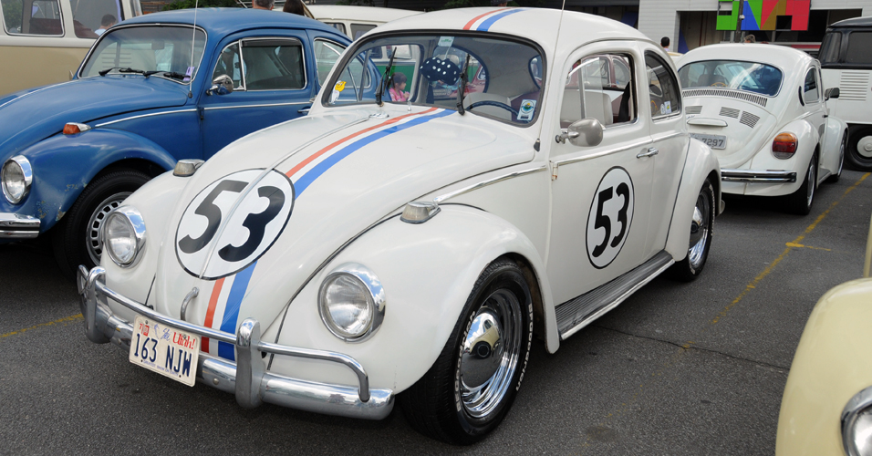
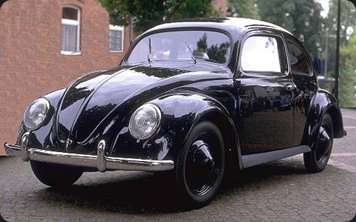

O Volkswagen Sedan (Fusca) ou Volkswagen Carocha (português europeu) foi o primeiro modelo de automóvel fabricado pela companhia alemã Volkswagen. Foi o carro mais vendido no mundo ultrapassando em 1972 o recorde que pertencia até então ao Ford Modelo T. O último modelo do VW Sedan foi produzido no México em 2003.
A história do Fusca é uma das mais complexas e longas da história do automóvel. Diferente da maioria dos outros carros, o projeto do Fusca envolveu várias empresas e até mesmo o governo de seu país, e levaria à fundação de uma fábrica inteira de automóveis no processo. Alguns pontos são obscuros ou mal documentados, já que o projeto inicialmente não teria tal importância histórica, e certos detalhes perderam-se com a devastação causada pela Segunda Guerra Mundial.
. Lançado oficialmente em 1.935, pelo então projetista Ferdinand Porsche, o Volkswagen podia ser comprado por quase todos, ao preço de 990 marcos, e era equipado com motor refrigerado a ar, sistema elétrico de seis volts, câmbio seco de quatro marchas, que até então só se fabricavam carros com caixa de câmbio inferiores a 3 marchas.Daí, as evoluções foram constantes.Sistema de freios a tambor, caixa de direção tipo \"rosca sem fim\", evoluções estéticas como quebra vento, lado abertura da porta (no início a porta abria do lado oposto), saída única de escapamento, estribo, entre outras.
Mais foi no ano de 1.986 que (temporariamente) acaba-se a carreira do Fusca. Embora o México não parar de produzi-lo, no Brasil sua linha de montagem chegara ao fim. Até que em 1.993 por pedido do então presidente do Brasil, Itamar Franco, o Fusca volta novo de novo, como nesses seus 60 anos muito bem vividos.1986
Na segunda fase de 1.993, sem mudanças na carroceria nem no motor o fusca ganhou pára-choques na cor do veículo, canalizador com uma única saída de escape no pára-lamas esquerdo, estofamentos novos, volante novo e muitos outros detalhes de acabamento, inclusive detalhes opcionais.Quando todos não acreditavam no sucesso do relançamento do Fusca, as vendas foram mais que animadoras. Chegou a produzir mais de 40 mil novos Fuscas. Até sua oficial parada de fabricação anunciada em Julho de 1.996 o fusca deixou mais fãs por seu rastro.1996
Para comemoração da sua última série de fabricação, foram fabricados os últimos 1.500 Fuscas carinhosamente dados numa versão \"FUSCA SÉRIE OURO\", onde os últimos 1.500 proprietários de fuscas \"novos\" tem seus nomes guardados em um \"Livro de ouro da VW.\" Um Fusca Série Ouro é facilmente identificado, neste seu último modelo a VW super-equipou esteticamente a versão.Com estofamentos do Pointer GTI, desembaçador traseiro, faróis de milha, painel com fundo branco, vidros verdes (75% transp.) esta foi a série de gala do querido carrinho. Mais uma vez nosso querido fusquinha cumpre seu papel, um sucesso de vendas e de mercado. Embora no México ainda foi fabricado até 30 de junho de 2.003
 Copyrigth 2015 - by Helio de Lima Facebook | Twitter